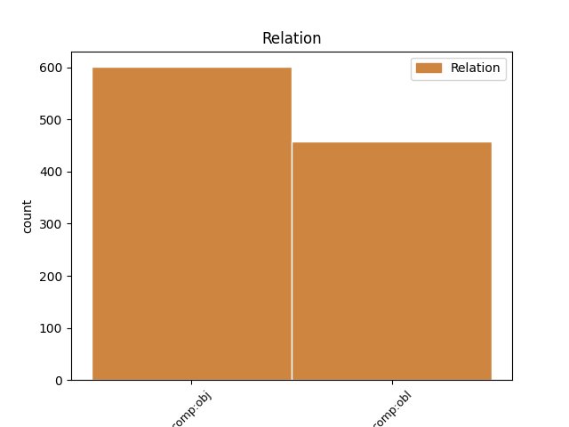
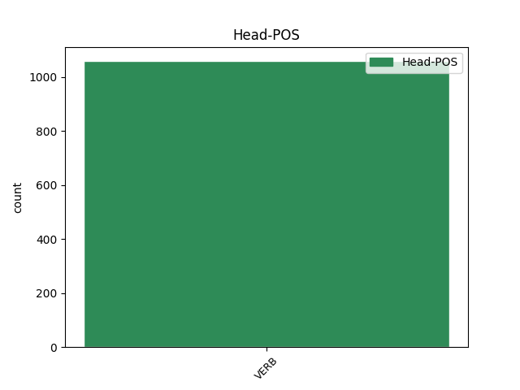
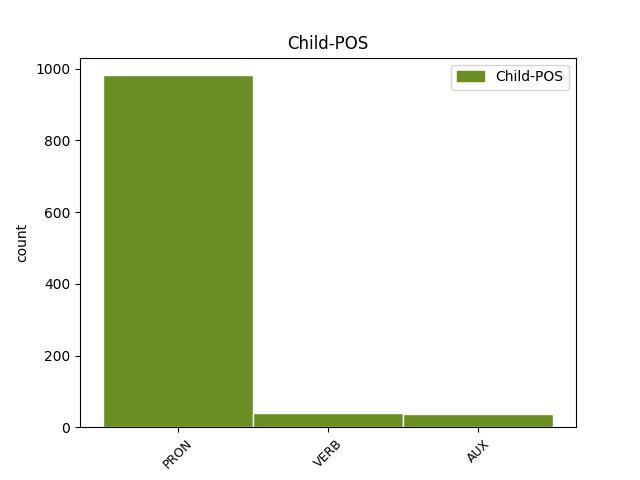

Distribution of features within this leaf



Agreement Rules sorted by frequency.
- When the dependent token is the direct object complements(comp:obj) of the head token,
1 Ciarrapico _ _ _ _ 0 _ _ _
2 : _ _ _ _ 0 _ _ _
3 Comunque _ _ _ _ 0 _ _ _
4 sa sapere VERB V Mood=Ind|Number=Sing|Person=3|Tense=Pres|VerbForm=Fin 0 _ _ _
5 quale _ _ _ _ 0 _ _ _
6 è essere AUX V Mood=Ind|Number=Sing|Person=3|Tense=Pres|VerbForm=Fin 4 comp:obj _ _
7 il _ _ _ _ 0 _ _ _
8 problema _ _ _ _ 0 _ _ _
9 di _ _ _ _ 0 _ _ _
10 il _ _ _ _ 0 _ _ _
11 governo _ _ _ _ 0 _ _ _
12 Monti _ _ _ _ 0 _ _ _
13 ? _ _ _ _ 0 _ _ _
14 Quale _ _ _ _ 0 _ _ _
15 , _ _ _ _ 0 _ _ _
16 senatore _ _ _ _ 0 _ _ _
17 ? _ _ _ _ 0 _ _ _
18 Che _ _ _ _ 0 _ _ _
19 so' _ _ _ _ 0 _ _ _
20 troppo _ _ _ _ 0 _ _ _
21 brutti _ _ _ _ 0 _ _ _
22 #Ahahahahah _ _ _ _ 0 _ _ _
1 @user _ _ _ _ 0 _ _ _
2 Ohhh _ _ _ _ 0 _ _ _
3 !!! _ _ _ _ 0 _ _ _
4 Una _ _ _ _ 0 _ _ _
5 volta _ _ _ _ 0 _ _ _
6 mi _ _ _ _ 0 _ _ _
7 racconterai _ _ _ _ 0 _ _ _
8 per _ _ _ _ 0 _ _ _
9 bene _ _ _ _ 0 _ _ _
10 :) _ _ _ _ 0 _ _ _
11 Si _ _ _ _ 0 _ _ _
12 , _ _ _ _ 0 _ _ _
13 mi mi PRON PC Clitic=Yes|Number=Sing|Person=1|PronType=Prs 14 comp:obl _ _
14 riguardo riguardare VERB V Mood=Ind|Number=Sing|Person=1|Tense=Pres|VerbForm=Fin 0 _ _ _
15 ci _ _ _ _ 0 _ _ _
16 tengo _ _ _ _ 0 _ _ _
17 troppo _ _ _ _ 0 _ _ _
18 :* _ _ _ _ 0 _ _ _
Disagree Examples:
1 STO _ _ _ _ 0 _ _ _
2 MALE _ _ _ _ 0 _ _ _
3 :c _ _ _ _ 0 _ _ _
4 #rt _ _ _ _ 0 _ _ _
5 segui seguire VERB V Mood=Imp|Number=Sing|Person=2|Tense=Pres|VerbForm=Fin 0 _ _ _
6 mi mi PRON PC Clitic=Yes|Number=Sing|Person=1|PronType=Prs 5 comp:obj _ _
7 ti _ _ _ _ 0 _ _ _
8 seguo _ _ _ _ 0 _ _ _
9 e _ _ _ _ 0 _ _ _
10 ti _ _ _ _ 0 _ _ _
11 faccio _ _ _ _ 0 _ _ _
12 una _ _ _ _ 0 _ _ _
13 domanda _ _ _ _ 0 _ _ _
14 .. _ _ _ _ 0 _ _ _
15 mi _ _ _ _ 0 _ _ _
16 annoio _ _ _ _ 0 _ _ _
17 :c _ _ _ _ 0 _ _ _
18 #follow _ _ _ _ 0 _ _ _
19 #followme _ _ _ _ 0 _ _ _
20 x9 _ _ _ _ 0 _ _ _
1 STO _ _ _ _ 0 _ _ _
2 MALE _ _ _ _ 0 _ _ _
3 :c _ _ _ _ 0 _ _ _
4 #rt _ _ _ _ 0 _ _ _
5 segui _ _ _ _ 0 _ _ _
6 mi _ _ _ _ 0 _ _ _
7 ti ti PRON PC Clitic=Yes|Number=Sing|Person=2|PronType=Prs 8 comp:obj _ _
8 seguo seguire VERB V Mood=Ind|Number=Sing|Person=1|Tense=Pres|VerbForm=Fin 0 _ _ _
9 e _ _ _ _ 0 _ _ _
10 ti _ _ _ _ 0 _ _ _
11 faccio _ _ _ _ 0 _ _ _
12 una _ _ _ _ 0 _ _ _
13 domanda _ _ _ _ 0 _ _ _
14 .. _ _ _ _ 0 _ _ _
15 mi _ _ _ _ 0 _ _ _
16 annoio _ _ _ _ 0 _ _ _
17 :c _ _ _ _ 0 _ _ _
18 #follow _ _ _ _ 0 _ _ _
19 #followme _ _ _ _ 0 _ _ _
20 x9 _ _ _ _ 0 _ _ _
1 STO _ _ _ _ 0 _ _ _
2 MALE _ _ _ _ 0 _ _ _
3 :c _ _ _ _ 0 _ _ _
4 #rt _ _ _ _ 0 _ _ _
5 segui _ _ _ _ 0 _ _ _
6 mi _ _ _ _ 0 _ _ _
7 ti _ _ _ _ 0 _ _ _
8 seguo _ _ _ _ 0 _ _ _
9 e _ _ _ _ 0 _ _ _
10 ti ti PRON PC Clitic=Yes|Number=Sing|Person=2|PronType=Prs 11 comp:obl _ _
11 faccio fare VERB V Mood=Ind|Number=Sing|Person=1|Tense=Pres|VerbForm=Fin 0 _ _ _
12 una _ _ _ _ 0 _ _ _
13 domanda _ _ _ _ 0 _ _ _
14 .. _ _ _ _ 0 _ _ _
15 mi _ _ _ _ 0 _ _ _
16 annoio _ _ _ _ 0 _ _ _
17 :c _ _ _ _ 0 _ _ _
18 #follow _ _ _ _ 0 _ _ _
19 #followme _ _ _ _ 0 _ _ _
20 x9 _ _ _ _ 0 _ _ _
1 “ _ _ _ _ 0 _ _ _
2 @user1 _ _ _ _ 0 _ _ _
3 : _ _ _ _ 0 _ _ _
4 #Grillo _ _ _ _ 0 _ _ _
5 e _ _ _ _ 0 _ _ _
6 il _ _ _ _ 0 _ _ _
7 teatrino _ _ _ _ 0 _ _ _
8 di _ _ _ _ 0 _ _ _
9 la _ _ _ _ 0 _ _ _
10 politica _ _ _ _ 0 _ _ _
11 . _ _ _ _ 0 _ _ _
12 Quanto _ _ _ _ 0 _ _ _
13 ci ci PRON PC Clitic=Yes|Number=Plur|Person=1|PronType=Prs 14 comp:obl _ _
14 piace piacere VERB V Mood=Ind|Number=Sing|Person=3|Tense=Pres|VerbForm=Fin 0 _ _ _
15 . _ _ _ _ 0 _ _ _
16 http://t.co/KzwIXKCM _ _ _ _ 0 _ _ _
17 ” _ _ _ _ 0 _ _ _
18 cc _ _ _ _ 0 _ _ _
19 @user2 _ _ _ _ 0 _ _ _
1 #Grillo _ _ _ _ 0 _ _ _
2 non _ _ _ _ 0 _ _ _
3 mi mi PRON PC Clitic=Yes|Number=Sing|Person=1|PronType=Prs 4 comp:obl _ _
4 piace piacere VERB V Mood=Ind|Number=Sing|Person=3|Tense=Pres|VerbForm=Fin 0 _ _ _
5 ma _ _ _ _ 0 _ _ _
6 data _ _ _ _ 0 _ _ _
7 la _ _ _ _ 0 _ _ _
8 pochezza _ _ _ _ 0 _ _ _
9 e _ _ _ _ 0 _ _ _
10 l' _ _ _ _ 0 _ _ _
11 insulsaggine _ _ _ _ 0 _ _ _
12 di _ _ _ _ 0 _ _ _
13 la _ _ _ _ 0 _ _ _
14 politica _ _ _ _ 0 _ _ _
15 italiana _ _ _ _ 0 _ _ _
16 non _ _ _ _ 0 _ _ _
17 mi _ _ _ _ 0 _ _ _
18 stupirei _ _ _ _ 0 _ _ _
19 se _ _ _ _ 0 _ _ _
20 facesse _ _ _ _ 0 _ _ _
21 il _ _ _ _ 0 _ _ _
22 botto _ _ _ _ 0 _ _ _
23 a _ _ _ _ 0 _ _ _
24 le _ _ _ _ 0 _ _ _
25 prossime _ _ _ _ 0 _ _ _
26 elezioni _ _ _ _ 0 _ _ _